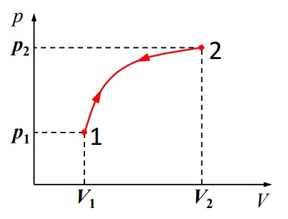
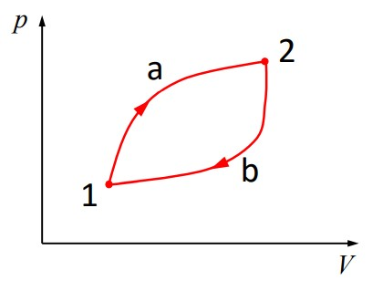

1. Fenomen termic. Termodinamica
Ce sunt fenomenele termice?
Fenomenele fizice legate de mișcarea completă dezordornată care se manifestă la nivel molecular.
Unele exemple de fenomene termice
- Schimbul de căldură dintre corpuri
- Variația proprietăților fizice (𝑝, 𝑉) la modificarea temperaturii
- Trecerea dintr-o stare de agregare în alta
Ce este termodinamica?
Studiază fenomenele termice fără să a lua în considerare structura internă, atomo-moleculară a corpurilor. Termodinamica studiază experimental fenomenele în care intervin corpuri macroscopice (corpuri formate dintr-un număr foarte mare dar finit de molecule sau atomi).
Teoria cinetico-moleculară (T.C.M.):studiază fenomenele termice pornind de la structura internă a corpurilor. Orice corp e format din atomi sau molecule, iar mișcările acestora se supun legilor mecanicii clasice.
Sistem termodinamic. Clasificări
Corp macroscopic
Corp format dintr-un număr foarte mare dar finit de molecule sau atomi
Sistem termodinamic
Orice corp macroscopic sau ansamblu bine precizat de corpuri macroscopice.
Exemplu:gaz închis într-un cilindru cu piston mobil
Observație:Corpurile înconjurătoare care nu fac parte din sistemul termodinamic se numesc corpuri exterioare (mediul exterior).
Sisteme termodinamice
Sistem termodinamic deschis
Schimbă energie și substanță cu mediul exterior
Sistem termodinamic închis
Schimbă energie cu mediul exterior, dar nu schimbă substanță cu mediul exterior
Sistem izolat(ideal)
Sistem termodinamic care nu interacționează și nu schimbă substanță cu mediul exterior
2. Parametrii de stare
Ce sunt parametrii de stare?
Mărimi fizice care caracterizează proprietățile sistemului termodinamic.
Exemple de parametrii de stare
- Masa, m
- Cantitatea de substanță, ν
- Volumul, V
- Presiunea, p
- Temperatura, T
- Densitatea, ρ
Clasificari
Parametrii intensivi
p, T, ρ
(𝑥1 = 𝑥2 = 𝑥)
- p = p1 = p2
- T = T1 = T2
- ρ = ρ1 = ρ2
Parametrii extensivi / aditivi
m, ν, V
(𝑥 = 𝑥1 + 𝑥 2)
- m = m1 + m2
- ν = ν1 + ν2
- V = V1 + V2
3. Echilibrul termic
Starea de echilibru termodinamic:starea unui sistem termodinamic în care parametrii de stare au valori care nu variază în timp.
Starea de neechilibru termodinamic: starea unui sistem termodinamic în care parametrii de stare au valori care variază în timp
Starea de echilibru termodinamic se reprezintă grafic printr-un punct în coordonate p – V , numite coordonate Clapeyron.
4. Procese (transformări) termodinamice
Proces termodinamic (transformare de stare):trecerea unui sistem termodinamic dintr-o stare de echilibru termodinamic în altă stare de echilibru termodinamic.
Transformarea cvasistatică
Transformarea în care parametrii de stare variază în timp atât de lent, încât, în orice moment, sistemul să poată fi considerat în echilibru termodinamicObs:Transformările cvasistatice se reprezintă prin curbe în coordonate p – V
Transformarea necvasistatică
Transformarea în care sistemul termodinamic trece dintr-o stare inițială de echilibru într-o stare finală de echilibru fără să treacă succesiv prin stări intermediare de echilibru termodinamic.
Transformarea reversibilă
Transformarea care poate avea loc în ambele sensuri, sistemul termodinamic trecând prin aceleași stări intermediare de echilibru termodinamic.
Transformarea ciclică
Transformarea în care starea finală a sistemului termodinamic coincide cu starea inițială.
Observații:
- Procesele necvasistatice sunt ireversibile
- Procesele din natură sunt ireversibile
- Procesele cvasistatice se reprezintă prin curbe în coordonate p – V:
Transformare reversibilă
Transformare ciclică
5. Interacțiunea sistemelor termodinamice cu mediul exterior
Tipuri de Interacțiuni
prin contact mecanic
schimb de lucru mecanic (L)
prin contact termic
schimb de căldură (Q)
prin schimb de substanță
sisteme deschise
Observații:
- Sistemele izolate mecanic își mențin volumul constant (V = cst.)
- Sistemele izolate adiabatic (izolate termic) nu schimbă căldură cu mediul exterior (Q = 0)
SECRET GAME
Ai terminat jocul!BRAVO!!!
Pentru a face zacuște, apasă pe imaginea cu zacuscă. Pentru a face mai multe zacuște, apasă pe upgrade. Pentru a face zacuscă automat, cumpără bunici. Pentru a termina jocul, cumpără "Last upgrade".
Număr de zacuște:
Faci zacuste per click